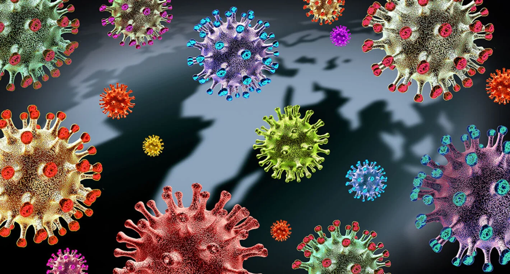

Variantes Covid-19
Es normal que los virus cambien y evolucionen a medida que se transmiten entre las personas a lo largo del tiempo. Cuando estos cambios se vuelven significativamente diferentes del virus original, se les denomina como "variantes". Para identificar las variantes, los científicos mapean el material genético de los virus (lo que se conoce como secuenciación) y luego buscan las diferencias entre ellos y analizan los cambios.
Desde que el SARS-CoV-2, el virus que causa la COVID-19, se ha extendido por todo el mundo, han surgido variantes que se han identificado en muchos países.
La epidemiología mundial actual del SARS-CoV-2 se caracteriza por el predominio de la variante delta, la tendencia a la disminución de la proporción de las variantes alfa, beta y gamma, y la aparición de ómicron, que fue designada como variante de preocupación (VOC, por sus siglas en inglés) por la OMS el 26 de noviembre de 2021.
Fuente: https://www.paho.org/es/noticias/3-12-2021-omicron-otras-variantes-preocupacion-identificadas-americas
Fuente: https://www.paho.org/es/variantes-sars-cov-2-covid-19-preguntas-frecuentes